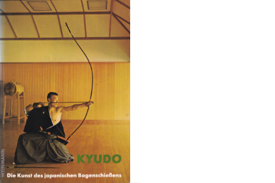
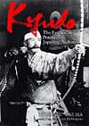

|  | Hoff, Feliks F; Kyudo - Die Kunst des japanischen Bogenschiessens Weinmann, 10. Aufl. 2002, 223 Seiten, 231 Abbildungen ISBN 3-87892-036-9, Preis: 16,80 Euro Deutsches Standardwerk für die Heki Ryu Insai Ha. |
 |
Prof. Mori, Toshio; Kyudo Book Seibido Shuppan, 2005, 176 Seiten ISBN 4-415-03021-1, Preis: 1.200 Yen Japanisches Lehrbuch für die Heki Ryu Insai Ha. |
|  | Hideharu Onuma with Dan and Jackie DeProspero; Kyudo, The Essence and Practice of Japanese Archery Kodansha International, 1993, 176 Seiten ISBN 4-7700-1734-0, Preis: 35,00 Dollar Englisches Standardwerk für den Shomenstil der ANKF. |